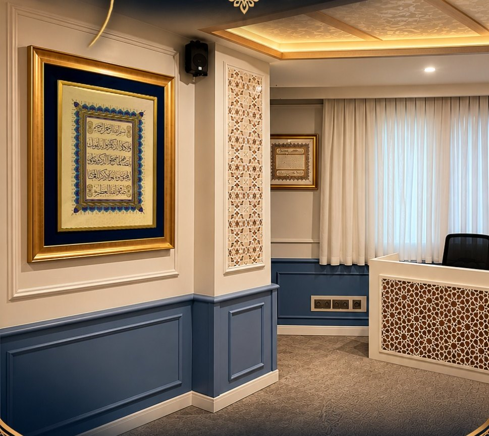

Mübarek yolculuğun
burada.
İhramdan seccadeye, hurmadan zemzeme kadar hac ve umre için gereken her şey, hediyelikleriyle birlikte Ümraniye'deki mağazamızda.
Cevherağa Camii Sokak No:10, Ümraniye
İhramdan seccadeye, hurmadan zemzeme kadar hac ve umre için gereken her şey, hediyelikleriyle birlikte Ümraniye'deki mağazamızda.
Cevherağa Camii Sokak No:10, Ümraniye
İstanbul Hac Umre Hediyelik olarak hac ve umreye hazırlanan misafirlerimize ihtiyaç duydukları ürünleri seçerek sunuyor, dönüşte sevdiklerinize götüreceğiniz hediyelikleri özenle hazırlıyoruz.

Hazırlıktan dönüşe kadar umrenin her adımını sahne sahne yaşayın. Yolda ihtiyacınız olanları işaretleyin, turun sonunda size özel teklifinizi hazırlayalım.
Tura katıl115'ten fazla Google yorumu